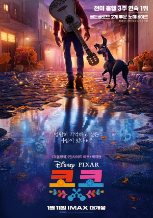

First Movie
코코

영화 개요
2017년 가을에 개봉한 픽사의 극장용 장편 애니메이션이다.
토이 스토리 3의 감독을 맡았던 리 언크리치가 감독을, 달라 K. 앤더슨이 프로듀서를 맡은 신작 애니메이션이다.
2012년 코믹콘에서 '죽은 자(망자)의 날(Día de Muertos)'이라는 가제로 제작 중이라고 발표했던 바가 있으며,
멕시코의 시골에 사는 12살 소년 미겔이 고대의 신비한 존재들을 만나 운명을 변화시키는 이야기라고 한다.
제75회 골든글로브상의 장편 애니메이션상을 수상,
제90회 아카데미 시상식의 장편 애니메이션상과 주제가상을 수상하였다.
픽사 애니메이션 중에서 2번째로 백인이 주인공이 아닌 영화이다.
백인이 주인공이 아닌 첫 번째 픽사 영화는 Sanjay's Super Team이라는 단편 영화.
이 단편 영화를 제외하면 사실상 첫 번째라고 봐도 문제 없다.
사운드 트랙
이 영화는 노래가 유명한 영화이기도 하다.
가장 유명한 노래는 'Remember me'라는 노래이다.